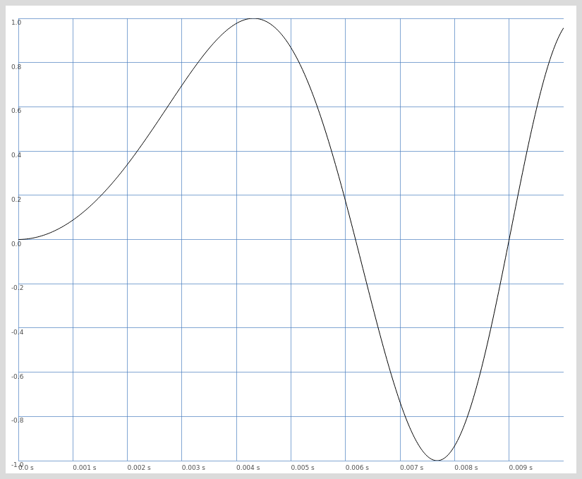

Введение в SuperCollider
Table of Contents
1 Почему SC?
Supercollider - это швейцарский нож для работы со звуком и композиции. С его помощью можно создавать программные синтезаторы, использовать его для генеративной/алгоритмической музыки, создавать языки и среды для лайв-кодинга, генерировать MIDI и посылать в любимую DAW и так далее.
2 Архитектура
Сама среда состоит из сервера (Scsynth или SuperNova) и языка (Sclang). Язык и сервер общаются с помощью протокола OSC. Именно эта особенность делает возможным быстро и довольно просто создавать интерфейсы для Scsynth на других языках программирования или использовать его в других программах, например Tidal Cycles - невероятно популярной среде для лайв кодинга.
Кроме того такая архитектура позволяет синхронизировать выступление нескольких человек. Именно так делают Benoît and the Mandelbrots
3 Базовый синтаксис
Все инструкции языка разделяются символом ';'. Существует только одно исключение - код, состоящий из одной строки, но вряд ли такой код может быть полезен.
Код из примера ниже выведет строку на экран:
"Hello World!".postln;
Иногда удобно группировать инструкции языка, чтобы выполнить несколько действий последовательно. Для этого инструкции заключаются в скобки:
( "Hello World!".postln; "Hello SC Workshop!".postln; )
4 Переменные
В SC существует три типа переменных: обычные переменные, глобальные и переменные окружения.
Обычные переменные обозначаются ключевым словом var. Такие переменные могут
существовать только в пределах блоков кода или функции (о них поговорим позже).
Такой код выведет строку "nothing" на экран:
( var something = "nothing"; something.postln; )
При этом такой код завершиться с ошибкой:
( var something = "nothing"; ) something.postln;
Так как за пределами скобок переменная уже не существует.
Переменные можно объявлять через запятую:
( var something, meaning_of_life; something = "nothing"; meaning_of_life = 42; )
Также существуют глобальные переменные - это все символы латинского алфавита,
кроме s - этот символ зарезервирован и является ссылкой на экземпляр сервера.
Глобальные переменные существуют независимо от блоков кода.
a = 0; ( a = 1 + 1; ) a.postln; // 2
Переменные окружения начинаются с символа ~, например ~something.
5 Функции
Функции - крайне важная тема в любом языке программирования. Они позволяют выполнять часто повторяемые операции или производить вычисления, зависимые от передаваемых параметров.
Чтобы создать функцию нужно заключить выражение в фигурные скобки, при этом функция вернёт последнее выражение.
Чтобы вызвать функцию необходимо вызвать метод .value.
f = { 1 + 2 };
f.value; // 3
Понятно, что фунции, вроде той, что мы написали выше не особо полезны. Чтобы написать по настоящему полезную ф-цию, нужно передать ей аргументы.
f = { arg x; x + 1};
f.value(1); // 2
Также можно задать значение аргумента по-умолчанию.
f = { arg x = 1; x + 1};
f.value; // 2
Для ф-ций также существует более короткий способ записи и вызова.
f = { |x| x + 1 };
f.(1); // 2
Его мы будем использовать чаще.
6 Юнит-генераторы (Ugen)
Пришло время создать первый звук. Для этого в SC существует множество строительных блоков - юнит генераторов. Это генераторы тона, огибающей, триггеры, фильтры и прочее.
Для того, чтобы начать работать со звуком нужно запустить сервер командой
s.boot;
s.boot;
f = { SinOsc.ar(440) }.play;
f.free;
SinOsc - это генератор синусоиды. У любого генератора есть методы .ar и
.kr - сокращения от Audio rate и Control rate. От выбора параметра зависит
насколько часто генератор будет обновлять значения. Для звука стоит выбирать
.ar, для модуляций подойдёт .kr (есть ещё .ir, но мы не будем его
рассматривать).
Метод .play создаёт экземпляр класса Synth у отправляет его на сервер.
Этот синтезатор можно остановить при помощи .free.
Вот пример простого тремоло:
s.boot;
f = {
SinOsc.ar(440) * SinOsc.kr(10).range(0.75, 1)
}.play;
f.free;
6.1 Отладка и анализ Юнит-генераторов
Иногда бывает полезно посмотреть какие именно значения выдаёт тот или иной генератор или какая форма сигнала получается при, например, алгебраических операциях над ними.
Чтобы вывести в окно отладки значение генератора нужно вызвать у него метод
.poll.
s.boot;
f = { SinOsc.ar(440).poll }.play;
f.free;
В итоге мы увидим следующее:
UGen(SinOsc): 0.057564 UGen(SinOsc): 0.0575251 UGen(SinOsc): 0.0574862 UGen(SinOsc): 0.0574474 UGen(SinOsc): 0.0574085 UGen(SinOsc): 0.0573696 UGen(SinOsc): 0.0573307 UGen(SinOsc): 0.0572918 UGen(SinOsc): 0.0572529 UGen(SinOsc): 0.0572141 UGen(SinOsc): 0.0571752
Также бывает полезно добавить какую-нибудь метку, например, чтобы лучше
понимать, к какому именно генератору относятся данные. Это можно сделать,
указав аргумент label
s.boot;
f = {
SinOsc.ar(440).poll(label: \signal) *
SinOsc.ar(20).poll(label: \amp_modulation)
}.play;
f.free;
Результат будет информативнее:
signal: 0.057564 amp_modulation: 0.00261799 signal: 0.0575251 amp_modulation: 0.002606 signal: 0.0574862 amp_modulation: 0.00259402 signal: 0.0574474 amp_modulation: 0.00258204 signal: 0.0574085 amp_modulation: 0.00257005 signal: 0.0573696 amp_modulation: 0.00255807
Также можно вывести форму волны для Юнит-генераторов, функций, коллекций
и даже файлов. Для этого можно вызвать метод .plot.
(
{ SinOsc.ar(220 * SinOsc.ar(20)) }.plot;
{ SinOsc.ar(440) * SinOsc.ar(20) }.plot;
)

Figure 1: Результат печати для первого сигнала
Figure 2: Результат печати для второго сигнала
6.2 Осциллограф и Спектральный анализатор.
Кроме методов .plot и .poll в SC есть ещё два анализатора - осциллограф и
спектральный анализатор.
s.scope; // Открыть осциллограф FreqScope.new(400, 200, 0, server: s); // спектральный анализатор
7 Массивы и Многоканальное расширение
7.1 Массивы
В SC существует большое количество коллекций, но особое внимание стоит уделить массивам, потому что именно ими мы будем пользоваться чаще всего.
Чтобы создать массив можно воспользоваться литералом или конструктором, но литерал всё же используется чаще.
( var arr1 = [1, 2, 3]; // литерал var arr2 = Array.new(); // конструктор )
Конструкторы же позволяют быстро создать коллекцию определёной формы:
Array.geom(10, 1, 2); // [ 1, 2, 4, 8, 16 ] геометрическая прогрессия Array.series(5, 1, 2); // [ 1, 3, 5, 7, 9 ] арифметическая прогрессия Array.interpolation(5, 1, 2); // [ 1.0, 1.25, 1.5, 1.75, 2.0 ] Array.fill(5, {|i| i * 0.25}); // Использование ф-ции для генерации
К массивам можно применять алгебраические операции
[1, 2, 3] + 10; // [ 11, 12, 13 ] [1, 2, 3] + [4, 5, 6]; // [ 5, 7, 9 ]
Также можно проводить вычисления с каждым элементом массива. Для этого существует два метода - итерация и применение ф-ции к массиву.
Первый метод - импользовать .do:
[0, 1, 2, 3].do({|i|
i.postln;
});
В результате на экран будут выведены числа от 0 до 3.
0 1 2 3 -> [ 0, 1, 2, 3 ]
При этом в результате операции вернулся тот же массив. Этот метод имеет смысл использовать, если нам нужно повторить какую-то операцию несколько раз.